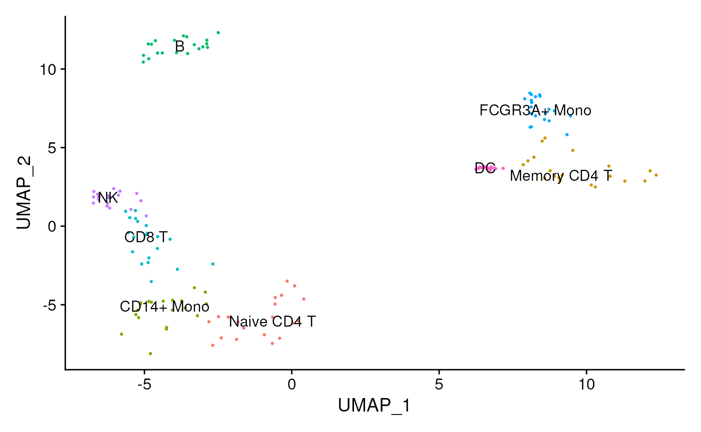
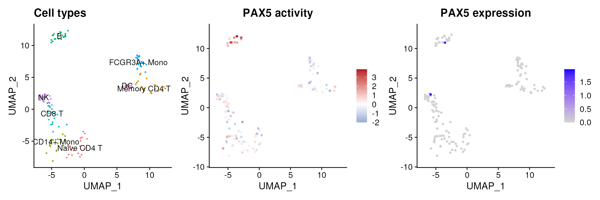
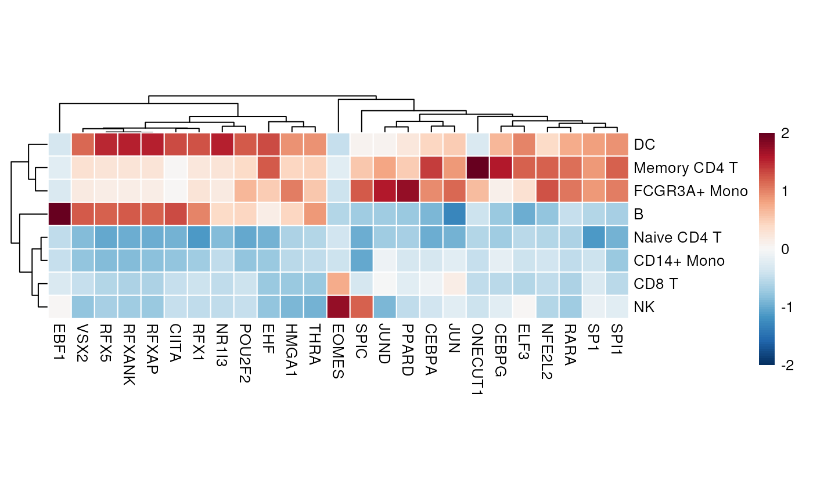

Transcription factor activity inference from scRNA-seq
Pau Badia-i-Mompel
Heidelberg UniversiySource:
vignettes/tf_sc.Rmd
tf_sc.RmdscRNA-seq yield many molecular readouts that are hard to interpret by themselves. One way of summarizing this information is by inferring transcription factor (TF) activities from prior knowledge.
In this notebook we showcase how to use decoupleR for
transcription factor activity inference with a down-sampled PBMCs 10X
data-set. The data consists of 382 PBMCs from a Healthy Donor. The
original data is freely available from 10x Genomics here
from this webpage.
Loading packages
First, we need to load the relevant packages, Seurat to
handle scRNA-seq data and decoupleR to use statistical
methods.
Loading the data-set
Here we used a down-sampled version of the data used in the
Seurat vignette.
We can open the data like this:
inputs_dir <- system.file("extdata", package = "decoupleR")
data <- readRDS(file.path(inputs_dir, "data.rds"))We can observe that we have different cell types:

DoRothEA network
DoRothEA is a comprehensive resource containing a curated collection of TFs and their transcriptional targets. Since these regulons were gathered from different types of evidence, interactions in DoRothEA are classified in different confidence levels, ranging from A (highest confidence) to D (lowest confidence). Moreover, each interaction is weighted by its confidence level and the sign of its mode of regulation (activation or inhibition).
For this example we will use the human version (mouse is also
available) and we will use the confidence levels ABC. To access it we
can use decoupleR.
net <- get_dorothea(organism='human', levels=c('A', 'B', 'C'))
net
#> # A tibble: 32,277 × 4
#> source confidence target mor
#> <chr> <chr> <chr> <dbl>
#> 1 ADNP C ATF7IP 0.333
#> 2 ADNP C DYRK1A 0.333
#> 3 ADNP C TLK1 0.333
#> 4 ADNP C ZMYM4 0.333
#> 5 AHR C ARHGAP15 0.333
#> 6 AHR C ARID5B 0.333
#> 7 AHR B ASAP1 0.5
#> 8 AHR C CREB5 0.333
#> 9 AHR C CTNNA1 0.333
#> 10 AHR C CTNNA2 0.333
#> # … with 32,267 more rowsActivity inference with Weighted Mean
To infer activities we will run the Weighted Mean method
(wmean). It infers regulator activities by first
multiplying each target feature by its associated weight which then are
summed to an enrichment score wmean. Furthermore,
permutations of random target features can be performed to obtain a null
distribution that can be used to compute a z-score
norm_wmean, or a corrected estimate corr_wmean
by multiplying wmean by the minus log10 of the obtained
empirical p-value.
In this example we use wmean but we could have used any
other. To see what methods are available use
show_methods().
To run decoupleR methods, we need an input matrix
(mat), an input prior knowledge network/resource
(net), and the name of the columns of net that we want to
use.
# Extract the normalized log-transformed counts
mat <- as.matrix(data@assays$RNA@data)
# Run wmean
acts <- run_wmean(mat=mat, net=net, .source='source', .target='target',
.mor='mor', times = 100, minsize = 5)
acts
#> # A tibble: 322,026 × 5
#> statistic source condition score p_value
#> <chr> <chr> <chr> <dbl> <dbl>
#> 1 corr_wmean AHR AAACATACAACCAC-1 0.448 0.06
#> 2 corr_wmean AHR AAACGCTGTTTCTG-1 0.142 0.22
#> 3 corr_wmean AHR AAATCAACCCTATT-1 0.507 0.06
#> 4 corr_wmean AHR AACCTTTGGACGGA-1 0.979 0.02
#> 5 corr_wmean AHR AACGCCCTCGTACA-1 0.0322 0.66
#> 6 corr_wmean AHR AACGTCGAGTATCG-1 0.0278 0.22
#> 7 corr_wmean AHR AACTCACTCAAGCT-1 0.175 0.26
#> 8 corr_wmean AHR AAGATGGAAAACAG-1 0.108 0.26
#> 9 corr_wmean AHR AAGATTACCGCCTT-1 0.715 0.04
#> 10 corr_wmean AHR AAGCACTGGTTCTT-1 0.690 0.04
#> # … with 322,016 more rowsVisualization
From the obtained results, we will select the norm_wmean
activities and store them in our object as a new assay called
tfswmean:
# Extract norm_wmean and store it in tfs_wmean in pbmc
data[['tfswmean']] <- acts %>%
filter(statistic == 'norm_wmean') %>%
pivot_wider(id_cols = 'source', names_from = 'condition',
values_from = 'score') %>%
column_to_rownames('source') %>%
Seurat::CreateAssayObject(.)
# Change assay
DefaultAssay(object = data) <- "tfswmean"
# Scale the data
data <- ScaleData(data)
data@assays$tfswmean@data <- data@assays$tfswmean@scale.dataThis new assay can be used to plot activities. Here we observe the activity inferred for PAX5 across cells, which it is particulary active in B cells. Interestingly, PAX5 is a known TF crucial for B cell identity and function. The inference of activities from “foot-prints” of target genes is more informative than just looking at the molecular readouts of a given TF, as an example here is the gene expression of PAX5, which is not very informative by itself:
p1 <- DimPlot(data, reduction = "umap", label = TRUE, pt.size = 0.5) +
NoLegend() + ggtitle('Cell types')
p2 <- (FeaturePlot(data, features = c("PAX5")) &
scale_colour_gradient2(low = 'blue', mid = 'white', high = 'red')) +
ggtitle('PAX5 activity')
DefaultAssay(object = data) <- "RNA"
p3 <- FeaturePlot(data, features = c("PAX5")) + ggtitle('PAX5 expression')
DefaultAssay(object = data) <- "tfswmean"
p1 | p2 | p3
Exploration
We can also see what is the mean activity per group of the top 20 more variable TFs:
n_tfs <- 25
# Extract activities from object as a long dataframe
df <- t(as.matrix(data@assays$tfswmean@data)) %>%
as.data.frame() %>%
mutate(cluster = Idents(data)) %>%
pivot_longer(cols = -cluster, names_to = "source", values_to = "score") %>%
group_by(cluster, source) %>%
summarise(mean = mean(score))
# Get top tfs with more variable means across clusters
tfs <- df %>%
group_by(source) %>%
summarise(std = sd(mean)) %>%
arrange(-abs(std)) %>%
head(n_tfs) %>%
pull(source)
# Subset long data frame to top tfs and transform to wide matrix
top_acts_mat <- df %>%
filter(source %in% tfs) %>%
pivot_wider(id_cols = 'cluster', names_from = 'source',
values_from = 'mean') %>%
column_to_rownames('cluster') %>%
as.matrix()
# Choose color pallette
palette_length = 100
my_color = colorRampPalette(c("Darkblue", "white","red"))(palette_length)
my_breaks <- c(seq(-3, 0, length.out=ceiling(palette_length/2) + 1),
seq(0.05, 3, length.out=floor(palette_length/2)))
# Plot
pheatmap(top_acts_mat, border_color = NA, color=my_color, breaks = my_breaks)  Here we can observe other known marker TFs appearing, PAX5 for B cells RFX5 for the myeloid lineage and JUND for the lymphoid.
Session information
#> ─ Session info ───────────────────────────────────────────────────────────────────────────────────────────────────────
#> setting value
#> version R version 4.1.3 (2022-03-10)
#> os Ubuntu 20.04.4 LTS
#> system x86_64, linux-gnu
#> ui X11
#> language en
#> collate en_US.UTF-8
#> ctype en_US.UTF-8
#> tz UTC
#> date 2022-03-31
#> pandoc 2.17.1.1 @ /usr/local/bin/ (via rmarkdown)
#>
#> ─ Packages ───────────────────────────────────────────────────────────────────────────────────────────────────────────
#> package * version date (UTC) lib source
#> abind 1.4-5 2016-07-21 [1] RSPM (R 4.1.0)
#> assertthat 0.2.1 2019-03-21 [1] RSPM (R 4.1.0)
#> backports 1.4.1 2021-12-13 [1] RSPM (R 4.1.0)
#> BiocManager 1.30.16 2021-06-15 [2] CRAN (R 4.1.3)
#> BiocStyle * 2.22.0 2021-10-26 [1] Bioconductor
#> bit 4.0.4 2020-08-04 [1] RSPM (R 4.1.0)
#> bit64 4.0.5 2020-08-30 [1] RSPM (R 4.1.0)
#> bookdown 0.25 2022-03-16 [1] RSPM (R 4.1.0)
#> broom 0.7.12 2022-01-28 [1] RSPM (R 4.1.0)
#> bslib 0.3.1 2021-10-06 [1] RSPM (R 4.1.0)
#> cachem 1.0.6 2021-08-19 [2] RSPM (R 4.1.0)
#> cellranger 1.1.0 2016-07-27 [1] RSPM (R 4.1.0)
#> checkmate 2.0.0 2020-02-06 [1] RSPM (R 4.1.0)
#> cli 3.2.0 2022-02-14 [2] RSPM (R 4.1.0)
#> cluster 2.1.3 2022-03-28 [3] RSPM (R 4.1.0)
#> codetools 0.2-18 2020-11-04 [3] CRAN (R 4.1.3)
#> colorspace 2.0-3 2022-02-21 [1] RSPM (R 4.1.0)
#> cowplot 1.1.1 2020-12-30 [1] RSPM (R 4.1.0)
#> crayon 1.5.1 2022-03-26 [2] RSPM (R 4.1.0)
#> curl 4.3.2 2021-06-23 [2] RSPM (R 4.1.0)
#> data.table 1.14.2 2021-09-27 [1] RSPM (R 4.1.0)
#> DBI 1.1.2 2021-12-20 [1] RSPM (R 4.1.0)
#> dbplyr 2.1.1 2021-04-06 [1] RSPM (R 4.1.0)
#> decoupleR * 2.1.9 2022-03-31 [1] Bioconductor
#> deldir 1.0-6 2021-10-23 [1] RSPM (R 4.1.0)
#> desc 1.4.1 2022-03-06 [2] RSPM (R 4.1.0)
#> digest 0.6.29 2021-12-01 [2] RSPM (R 4.1.0)
#> dplyr * 1.0.8 2022-02-08 [2] RSPM (R 4.1.0)
#> ellipsis 0.3.2 2021-04-29 [2] RSPM (R 4.1.0)
#> evaluate 0.15 2022-02-18 [2] RSPM (R 4.1.0)
#> fansi 1.0.3 2022-03-24 [2] RSPM (R 4.1.0)
#> farver 2.1.0 2021-02-28 [1] RSPM (R 4.1.0)
#> fastmap 1.1.0 2021-01-25 [2] RSPM (R 4.1.0)
#> fitdistrplus 1.1-8 2022-03-10 [1] RSPM (R 4.1.0)
#> forcats * 0.5.1 2021-01-27 [1] RSPM (R 4.1.0)
#> fs 1.5.2 2021-12-08 [2] RSPM (R 4.1.0)
#> future 1.24.0 2022-02-19 [1] RSPM (R 4.1.0)
#> future.apply 1.8.1 2021-08-10 [1] RSPM (R 4.1.0)
#> generics 0.1.2 2022-01-31 [2] RSPM (R 4.1.0)
#> ggplot2 * 3.3.5 2021-06-25 [1] RSPM (R 4.1.0)
#> ggrepel 0.9.1 2021-01-15 [1] RSPM (R 4.1.0)
#> ggridges 0.5.3 2021-01-08 [1] RSPM (R 4.1.0)
#> globals 0.14.0 2020-11-22 [1] RSPM (R 4.1.0)
#> glue 1.6.2 2022-02-24 [2] RSPM (R 4.1.0)
#> goftest 1.2-3 2021-10-07 [1] RSPM (R 4.1.0)
#> gridExtra 2.3 2017-09-09 [1] RSPM (R 4.1.0)
#> gtable 0.3.0 2019-03-25 [1] RSPM (R 4.1.0)
#> haven 2.4.3 2021-08-04 [1] RSPM (R 4.1.0)
#> highr 0.9 2021-04-16 [2] RSPM (R 4.1.0)
#> hms 1.1.1 2021-09-26 [1] RSPM (R 4.1.0)
#> htmltools 0.5.2 2021-08-25 [1] RSPM (R 4.1.0)
#> htmlwidgets 1.5.4 2021-09-08 [1] RSPM (R 4.1.0)
#> httpuv 1.6.5 2022-01-05 [1] RSPM (R 4.1.0)
#> httr 1.4.2 2020-07-20 [2] RSPM (R 4.1.0)
#> ica 1.0-2 2018-05-24 [1] RSPM (R 4.1.0)
#> igraph 1.2.11 2022-01-04 [1] RSPM (R 4.1.0)
#> irlba 2.3.5 2021-12-06 [1] RSPM (R 4.1.0)
#> jquerylib 0.1.4 2021-04-26 [1] RSPM (R 4.1.0)
#> jsonlite 1.8.0 2022-02-22 [2] RSPM (R 4.1.0)
#> KernSmooth 2.23-20 2021-05-03 [3] CRAN (R 4.1.3)
#> knitr 1.38 2022-03-25 [2] RSPM (R 4.1.0)
#> labeling 0.4.2 2020-10-20 [1] RSPM (R 4.1.0)
#> later 1.3.0 2021-08-18 [1] RSPM (R 4.1.0)
#> lattice 0.20-45 2021-09-22 [3] CRAN (R 4.1.3)
#> lazyeval 0.2.2 2019-03-15 [1] RSPM (R 4.1.0)
#> leiden 0.3.9 2021-07-27 [1] RSPM (R 4.1.0)
#> lifecycle 1.0.1 2021-09-24 [2] RSPM (R 4.1.0)
#> listenv 0.8.0 2019-12-05 [1] RSPM (R 4.1.0)
#> lmtest 0.9-40 2022-03-21 [1] RSPM (R 4.1.0)
#> logger 0.2.2 2021-10-19 [1] RSPM (R 4.1.0)
#> lubridate 1.8.0 2021-10-07 [1] RSPM (R 4.1.0)
#> magrittr 2.0.2 2022-01-26 [2] RSPM (R 4.1.0)
#> MASS 7.3-56 2022-03-23 [3] RSPM (R 4.1.0)
#> Matrix 1.4-1 2022-03-23 [3] RSPM (R 4.1.0)
#> matrixStats 0.61.0 2021-09-17 [1] RSPM (R 4.1.0)
#> memoise 2.0.1 2021-11-26 [2] RSPM (R 4.1.0)
#> mgcv 1.8-40 2022-03-29 [3] RSPM (R 4.1.0)
#> mime 0.12 2021-09-28 [2] RSPM (R 4.1.0)
#> miniUI 0.1.1.1 2018-05-18 [1] RSPM (R 4.1.0)
#> modelr 0.1.8 2020-05-19 [1] RSPM (R 4.1.0)
#> munsell 0.5.0 2018-06-12 [1] RSPM (R 4.1.0)
#> nlme 3.1-157 2022-03-25 [3] RSPM (R 4.1.0)
#> OmnipathR 3.2.8 2022-02-24 [1] Bioconductor
#> parallelly 1.30.0 2021-12-17 [1] RSPM (R 4.1.0)
#> patchwork * 1.1.1 2020-12-17 [1] RSPM (R 4.1.0)
#> pbapply 1.5-0 2021-09-16 [1] RSPM (R 4.1.0)
#> pheatmap * 1.0.12 2019-01-04 [1] RSPM (R 4.1.0)
#> pillar 1.7.0 2022-02-01 [2] RSPM (R 4.1.0)
#> pkgconfig 2.0.3 2019-09-22 [2] RSPM (R 4.1.0)
#> pkgdown 2.0.2 2022-01-13 [1] RSPM (R 4.1.0)
#> plotly 4.10.0 2021-10-09 [1] RSPM (R 4.1.0)
#> plyr 1.8.7 2022-03-24 [1] RSPM (R 4.1.0)
#> png 0.1-7 2013-12-03 [1] RSPM (R 4.1.0)
#> polyclip 1.10-0 2019-03-14 [1] RSPM (R 4.1.0)
#> prettyunits 1.1.1 2020-01-24 [2] RSPM (R 4.1.0)
#> progress 1.2.2 2019-05-16 [1] RSPM (R 4.1.0)
#> promises 1.2.0.1 2021-02-11 [1] RSPM (R 4.1.0)
#> purrr * 0.3.4 2020-04-17 [2] RSPM (R 4.1.0)
#> R6 2.5.1 2021-08-19 [2] RSPM (R 4.1.0)
#> ragg 1.2.2 2022-02-21 [1] RSPM (R 4.1.0)
#> RANN 2.6.1 2019-01-08 [1] RSPM (R 4.1.0)
#> rappdirs 0.3.3 2021-01-31 [2] RSPM (R 4.1.0)
#> RColorBrewer 1.1-2 2014-12-07 [1] RSPM (R 4.1.0)
#> Rcpp 1.0.8.3 2022-03-17 [1] RSPM (R 4.1.0)
#> RcppAnnoy 0.0.19 2021-07-30 [1] RSPM (R 4.1.0)
#> readr * 2.1.2 2022-01-30 [1] RSPM (R 4.1.0)
#> readxl 1.4.0 2022-03-28 [1] RSPM (R 4.1.0)
#> reprex 2.0.1 2021-08-05 [1] RSPM (R 4.1.0)
#> reshape2 1.4.4 2020-04-09 [1] RSPM (R 4.1.0)
#> reticulate 1.24 2022-01-26 [1] RSPM (R 4.1.0)
#> rlang 1.0.2 2022-03-04 [2] RSPM (R 4.1.0)
#> rmarkdown 2.13 2022-03-10 [1] RSPM (R 4.1.0)
#> ROCR 1.0-11 2020-05-02 [1] RSPM (R 4.1.0)
#> rpart 4.1.16 2022-01-24 [3] CRAN (R 4.1.3)
#> rprojroot 2.0.2 2020-11-15 [2] RSPM (R 4.1.0)
#> rstudioapi 0.13 2020-11-12 [2] RSPM (R 4.1.0)
#> Rtsne 0.15 2018-11-10 [1] RSPM (R 4.1.0)
#> rvest 1.0.2 2021-10-16 [1] RSPM (R 4.1.0)
#> sass 0.4.1 2022-03-23 [1] RSPM (R 4.1.0)
#> scales 1.1.1 2020-05-11 [1] RSPM (R 4.1.0)
#> scattermore 0.8 2022-02-14 [1] RSPM (R 4.1.0)
#> sctransform 0.3.3 2022-01-13 [1] RSPM (R 4.1.0)
#> sessioninfo 1.2.2 2021-12-06 [2] RSPM (R 4.1.0)
#> Seurat * 4.1.0 2022-01-14 [1] RSPM (R 4.1.0)
#> SeuratObject * 4.0.4 2021-11-23 [1] RSPM (R 4.1.0)
#> shiny 1.7.1 2021-10-02 [1] RSPM (R 4.1.0)
#> spatstat.core 2.4-0 2022-02-15 [1] RSPM (R 4.1.0)
#> spatstat.data 2.1-4 2022-03-29 [1] RSPM (R 4.1.0)
#> spatstat.geom 2.4-0 2022-03-29 [1] RSPM (R 4.1.0)
#> spatstat.random 2.1-0 2022-02-12 [1] RSPM (R 4.1.0)
#> spatstat.sparse 2.1-0 2021-12-17 [1] RSPM (R 4.1.0)
#> spatstat.utils 2.3-0 2021-12-12 [1] RSPM (R 4.1.0)
#> stringi 1.7.6 2021-11-29 [2] RSPM (R 4.1.0)
#> stringr * 1.4.0 2019-02-10 [2] RSPM (R 4.1.0)
#> survival 3.3-1 2022-03-03 [3] RSPM (R 4.1.0)
#> systemfonts 1.0.4 2022-02-11 [1] RSPM (R 4.1.0)
#> tensor 1.5 2012-05-05 [1] RSPM (R 4.1.0)
#> textshaping 0.3.6 2021-10-13 [1] RSPM (R 4.1.0)
#> tibble * 3.1.6 2021-11-07 [2] RSPM (R 4.1.0)
#> tidyr * 1.2.0 2022-02-01 [2] RSPM (R 4.1.0)
#> tidyselect 1.1.2 2022-02-21 [2] RSPM (R 4.1.0)
#> tidyverse * 1.3.1 2021-04-15 [1] RSPM (R 4.1.0)
#> tzdb 0.3.0 2022-03-28 [1] RSPM (R 4.1.0)
#> utf8 1.2.2 2021-07-24 [2] RSPM (R 4.1.0)
#> uwot 0.1.11 2021-12-02 [1] RSPM (R 4.1.0)
#> vctrs 0.3.8 2021-04-29 [2] RSPM (R 4.1.0)
#> viridisLite 0.4.0 2021-04-13 [1] RSPM (R 4.1.0)
#> vroom 1.5.7 2021-11-30 [1] RSPM (R 4.1.0)
#> withr 2.5.0 2022-03-03 [2] RSPM (R 4.1.0)
#> xfun 0.30 2022-03-02 [2] RSPM (R 4.1.0)
#> xml2 1.3.3 2021-11-30 [2] RSPM (R 4.1.0)
#> xtable 1.8-6 2020-06-19 [1] R-Forge (R 4.1.3)
#> yaml 2.3.5 2022-02-21 [2] RSPM (R 4.1.0)
#> zoo 1.8-9 2021-03-09 [1] RSPM (R 4.1.0)
#>
#> [1] /__w/_temp/Library
#> [2] /usr/local/lib/R/site-library
#> [3] /usr/local/lib/R/library
#>
#> ──────────────────────────────────────────────────────────────────────────────────────────────────────────────────────